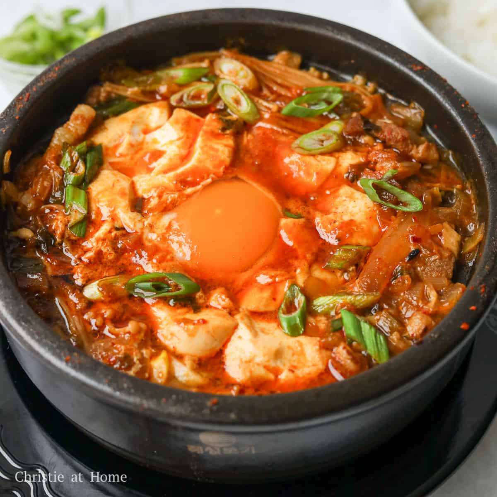

Home
Sundubu Jjigae

Description
Sundubu jjigae is a Korean stew made with soft tofu as a highlight ingredient.
In general, sundubu jjigae is a bit spicy though I think my recipe is in the modest pepper scale. Nevertheless, the spiciness of the stew can vary depending on the types of chili powder / chili flakes you use. Also, whether you used chili oil or neutral oil. A spicier version can potentially make you sneeze while you are cooking and may even tickle your throat.
Nonetheless, it’s a refreshing, delicious and very comforting stew you can enjoy any time of the year!
Ingredients
Main
- Korean soft tofu (sundubu)
- Minced Pork
- Enoki mushrooms
- Shiitake mushrooms
- An Egg
- Thinly sliced Green Onion
Soup Base
- Dried kelp and anchovy stock
- Korean chili oil
- Korean chili powder or Korean chili flakes (gochugaru)
- Minced garlic
- Korean fish sauce
- Korean soup soy sauce
- Fine sea salt
- A few sprinkles of ground black pepper
- A dash of sesame oil
Steps
- Start heating the pot on the stove over medium low heat and add the chili oil, chili powder, and garlic. Stir them well for about 1 min. Make sure not to burn the chili powder.
- dd the clams and shrimps and stir quickly to coat them with the chili sauce. Add the fish sauce and soy sauce then stir.
- Add the dried kelp and anchovy stock and boil it on medium-high heat until it starts to boil rapidly (2 to 3 mins).
- Add the tofu, mushrooms, and egg and cook them for another 2 to 3 mins. Season with salt, if required.
- Top up with the green onion, black pepper and sesame oil. Serve hot with Korean rice and side dishes (banchan).